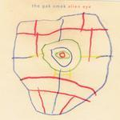

| Artist: | The Gak Omek |
| Title: | Alien Eye |
| Label: | Bluecube Music |
| Length(s): | 61 minutes |
| Year(s) of release: | 2003 |
| Month of review: | [10/2003] |
| 1) | Black Holes Colliding | 10.33 |
| 2) | Here Comes The Aluminum Man | 9.02 |
| 3) | Tourniquette Of Roses | 9.24 |
| 4) | Moonburn 3am | 8.37 |
| 5) | Baby Gotta Visegrip | 6.54 |
| 6) | Dancing Bologna | 6.15 |
| 7) | Robotomy | 4.34 |
| 8) | The Squiggly Parameter | 5.24 |